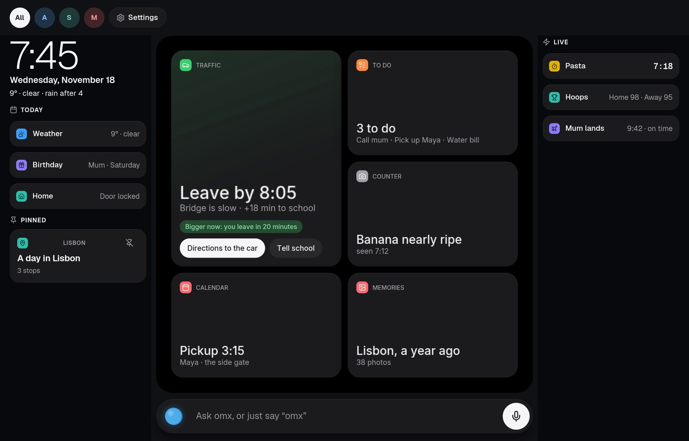
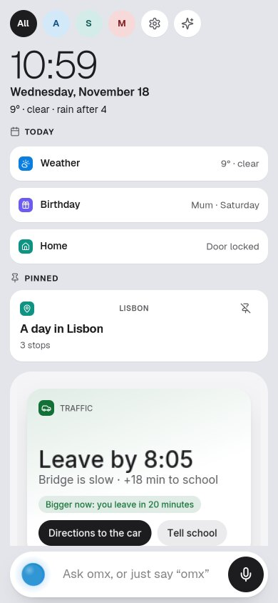

The Stage
Your day on one screen.
What you pinned on the left. What matters now in the middle. What's live on the right. And a chat bar at the bottom: just talk, or tap to type.
the Stage with sample data
Ask it out loud. It shows you.
A voice in a box can't show you anything. omxome is a kitchen-counter assistant with a screen you can glance at, talk to, be shown things on, and check, all in one place.
Linux today · the Stage on the Mac · iPhone, iPad and Android soon · MIT licence
What you pinned on the left. What matters now in the middle. What's live on the right. And a chat bar at the bottom: just talk, or tap to type.
Ask for a Saturday in Lisbon, how a heat pump works, what a word means. The chat bar grows over the stage like a TV and the model builds the card it needs: a real map, a diagram, a word card. A ring points at each part as it talks, then it all folds back to your tiles.
Drag any tile onto Pinned and it stays on the left, out of the way but in sight. The stage closes the gap. Unpin it and it comes back.
A game's score, a flight landing, the pasta timer: small rows that keep up on their own, the score and the timer changing as you watch. When one needs you, it can move to the big tile in the middle, the way the flight does near the airport.

Most of the time, everything happens on your own machine. For a bigger brain on one question, ask for it by name: it uses a subscription you already have, your Claude account today, others to come.
Qwen3.8-27B runs inside omxome's own process, with hearing (Parakeet), speaking (Kokoro) and knowing when you've stopped (Silero) beside it. No server to call, no browser in between.
Say “ask Claude…” and that one question goes out through your own Claude sign-in, with an orange frame round the screen while it does. Only your words leave; anything that looks like a password stays home; every request is written down first.
measured on one Linux machine with two RTX 3090s, by the checks in the repository
Written once in Mojo on omxcode, drawn with each platform's own controls: GTK on Linux, AppKit on the Mac. No web view. Three columns on a counter, one on a phone.



the Stage on a Mac (M4), at night: on the Mac the Stage runs natively today; the voice and the model run on Linux first · right: at a phone's width